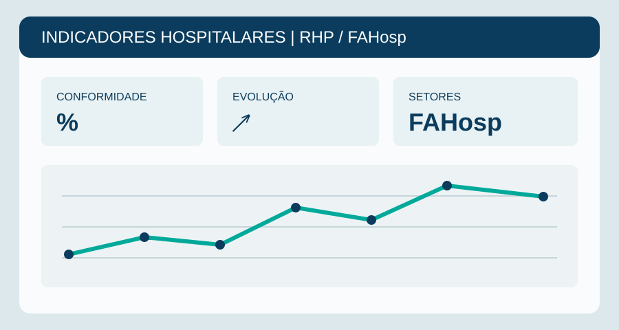
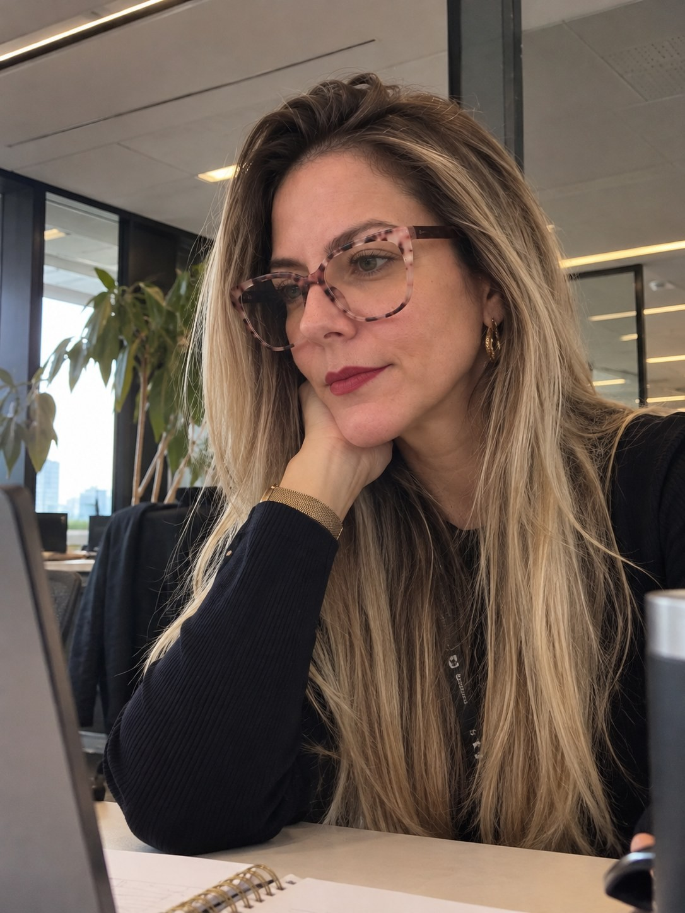
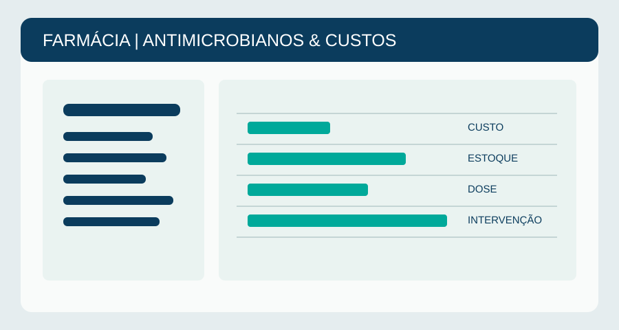
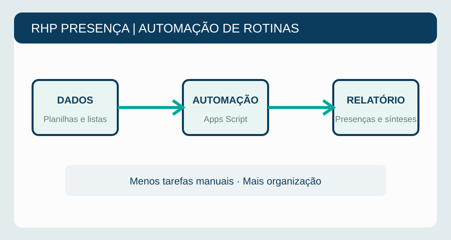
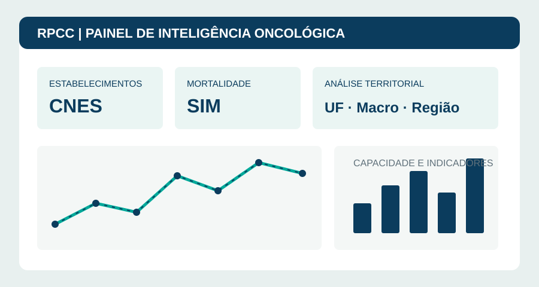

Dashboards
Indicadores Hospitalares RHP / FAHosp
Painéis de acompanhamento de indicadores assistenciais e de segurança do paciente para apoio à gestão.
→ Ver projeto
Farmacêutica com experiência em gestão e assistência hospitalar, explorando o potencial da análise de dados, automação e inteligência artificial para fortalecer o SUS e a saúde pública.
Pharmacist with experience in hospital care and management, exploring data analysis, automation, and artificial intelligence to support Brazil's public health system.
Da farmácia hospitalar para a tecnologia em saúdeFrom hospital pharmacy to health technology
Sou farmacêutica, com experiência em Farmácia Hospitalar e Clínica, gestão de processos assistenciais, segurança do paciente e melhoria da qualidade da assistência. Atualmente, atuo em projetos de qualificação da gestão e da assistência hospitalar no PROADI-SUS.
Minha trajetória reúne atuação hospitalar, formação de equipes, acompanhamento de indicadores e desenvolvimento de iniciativas de melhoria. Hoje, direciono esse conhecimento para Tecnologia, Ciência de Dados e Inteligência Artificial.
Tenho interesse em projetos que conectem conhecimento de domínio, dados e tecnologia para resolver problemas reais, especialmente nas áreas de saúde digital, gestão hospitalar e políticas públicas de saúde.
I am a pharmacist with experience in hospital and clinical pharmacy, care-process management, patient safety, and quality improvement. I currently contribute to hospital management and care improvement initiatives through PROADI-SUS.
My background combines hospital practice, team development, indicator monitoring, and improvement initiatives. I am now extending this experience into technology, data science, and artificial intelligence.
I am interested in projects that connect domain knowledge, data, and technology to solve real problems, especially in digital health, hospital management, and public health policy.
Saiba mais sobre minha trajetóriaLearn more about my background →Soluções práticas com dados e tecnologia para a saúdePractical healthcare data and technology solutions

Painéis de acompanhamento de indicadores assistenciais e de segurança do paciente para apoio à gestão.
→ Ver projeto
Organização de informações de uso, estoque, custos e intervenções farmacêuticas para apoiar a tomada de decisão.
→ Ver projeto
Automação de listas de presença e geração de relatórios para atividades de capacitação no PROADI-SUS.
→ Ver projeto
Exploração de bases públicas (CNES, SIM, INCA) para análises epidemiológicas e estudos de capacidade instalada no SUS.
→ Ver projetoEm constante aprendizadoAlways learning
Uma base sólida em saúde com novas competências em tecnologiaA strong healthcare foundation with emerging technology skills
Conexões, projetos e oportunidadesConnections, projects and opportunities